Full-time family travel, now in a Wonderland RV Solara
After a long journey to have Jasper, we became very aware of just how quickly time passes and started asking ourselves whether the life we were living was really the one we wanted.
In September 2019, we packed up our lives, bought a caravan and hit the road for what was meant to be a two-year lap of Australia. Seven years later, we’re still going.
These days, travelling Australia is simply our life. We homeschool Jasper on the road and run our business, The Feel Good Family, from wherever we happen to be parked.
KATIE, PAUL & JASPERTHE FEEL GOOD FAMILY
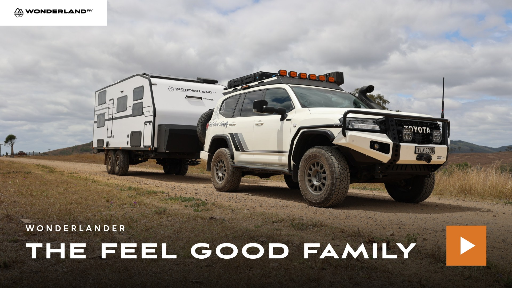
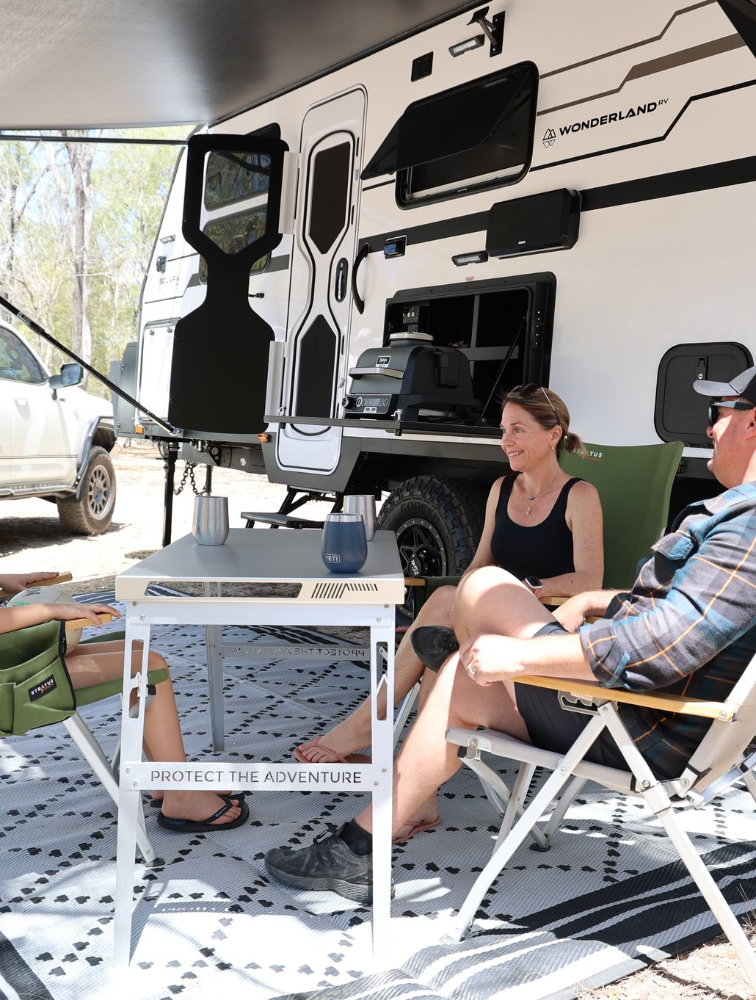
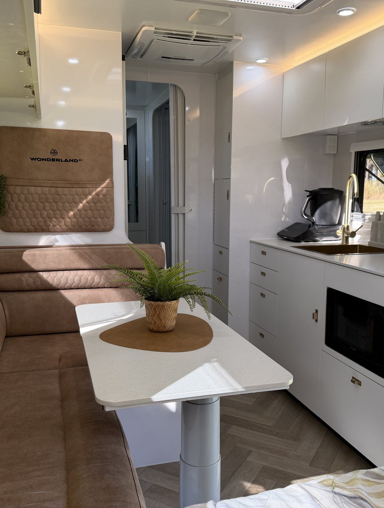
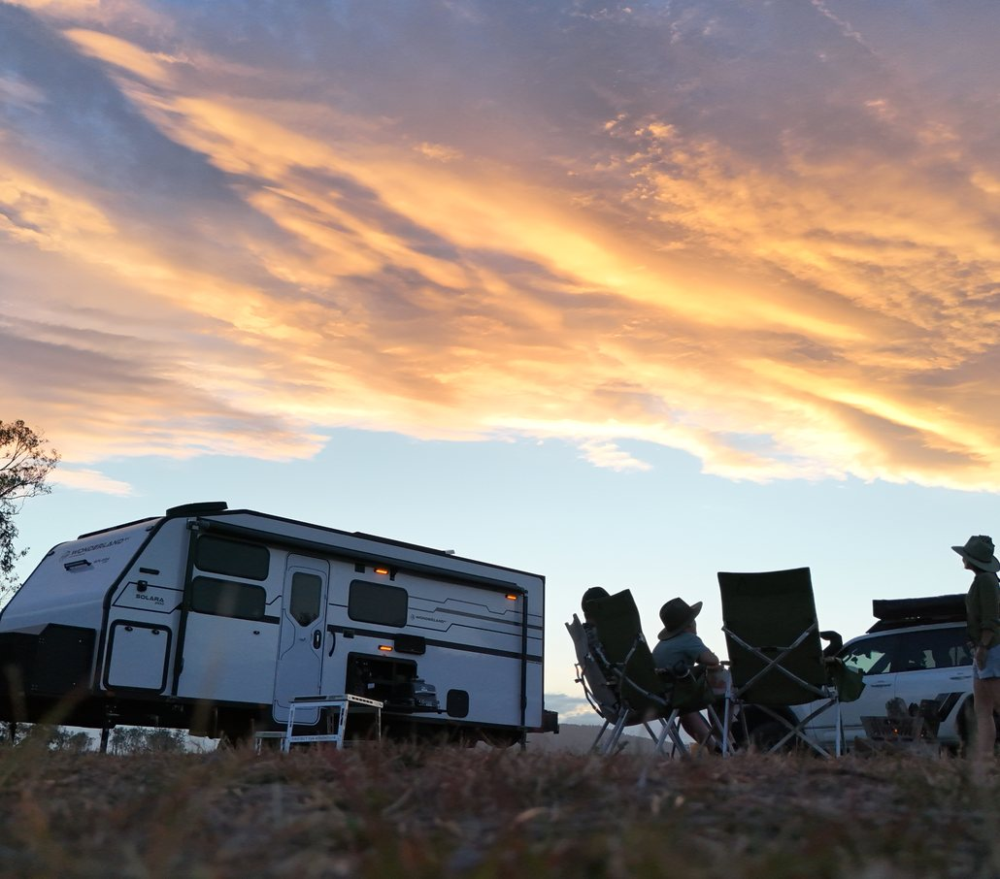
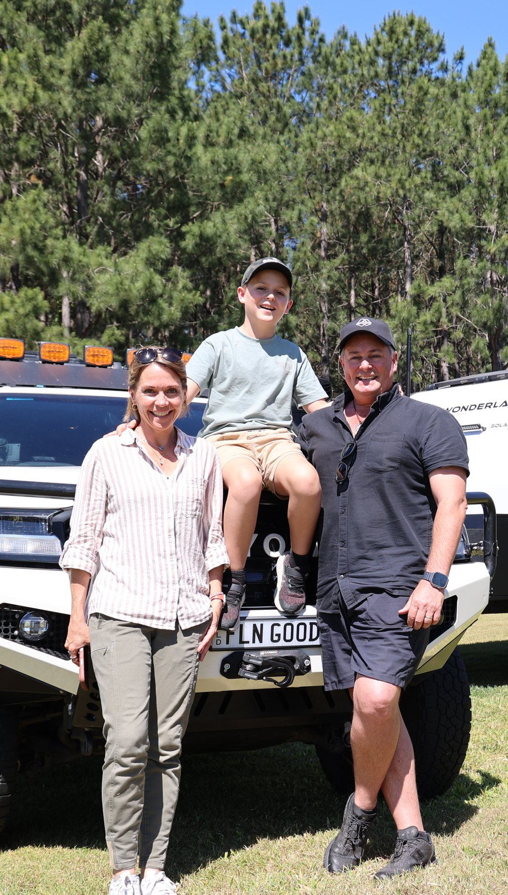
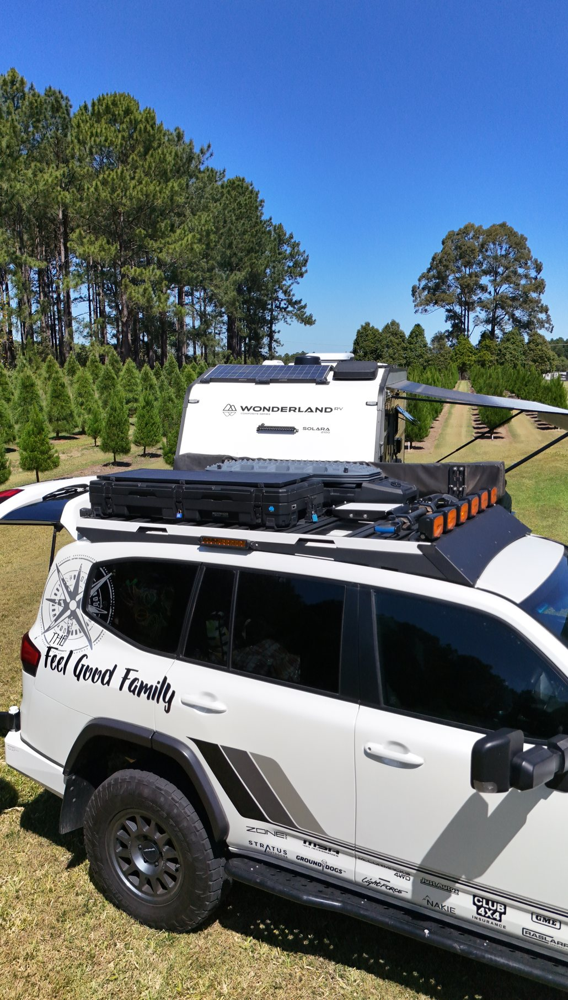
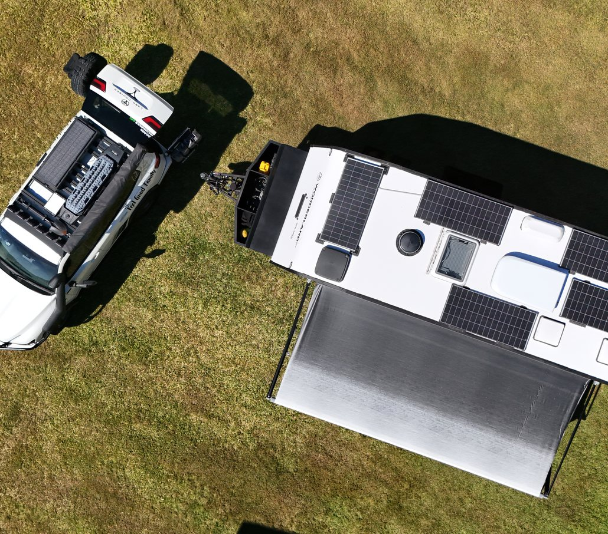
How do you fit everything in your caravan? Any clever storage ideas?
Seven years of living in a caravan has definitely taught us that less is more. Everything needs to have a home, and if something comes in, there’s a pretty good chance something else needs to go out. We’ve also realised just how little ‘stuff’ you actually need to live a really full and happy life. These days, most of what we carry is production gear for our work, with one notable exception: Jasper’s ever-expanding LEGO collection, which seems to operate under its own set of rules.
What are your go-to meals when caravanning? Do you have any favourite camping recipes that you’d like to share?
We recently bought a Ninja Woodfire Electric BBQ Grill & Smoker, which has replaced both our air fryer and BBQ, so at the moment pretty much anything we can cook on there is a winner. We’re a pescetarian family, so we love fresh fish, homemade pizzas and are always experimenting with new healthy meals on the road. We also love cooking up a lemon myrtle damper around camp, that one’s definitely a family favourite.
What’s the coolest thing you’ve found on your travels? Any hidden gems or off-the-beaten-path places?
This is probably the hardest question you could ask us. After seven years travelling Australia, there are so many places we love for completely different reasons, and often it’s the places we knew very little about that have surprised us the most. But Cape York would have to be right up there. It’s brimming with natural assets, rich cultural heritage and a remoteness that still makes it feel wild and epic. The Cape absolutely lives up to the hype.
What are your must-have caravanning essentials? Any unexpected items that have become indispensable on your travels?
Our coffee machine is a non-negotiable. Starlink is an essential too: when you live, school and work on the road, staying connected makes life a whole lot easier. For anyone wanting to travel off-road and off-grid, the two things we always recommend investing in are a quality battery and solar setup, and quality suspension. They give you the freedom and confidence to get further off the beaten track and stay there longer. Our Thermomix has travelled with us for years, and more recently the Ninja Woodfire has well and truly earned its place too.
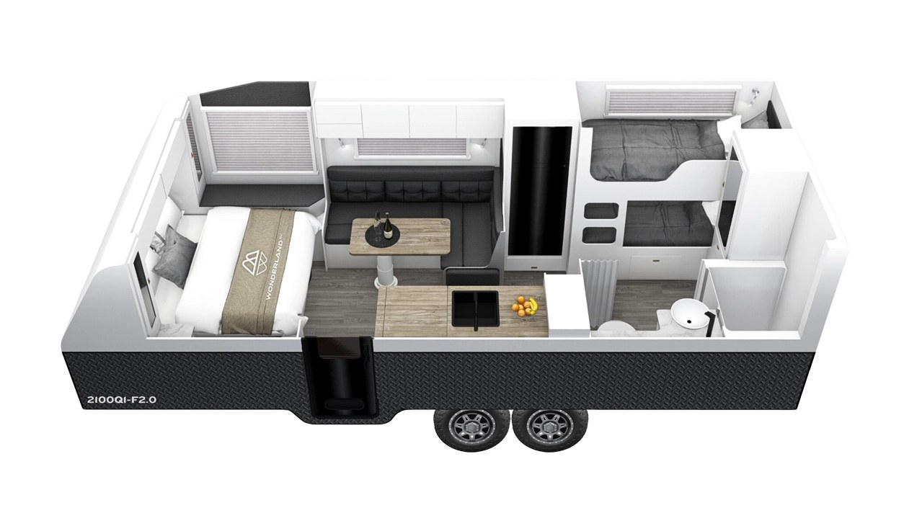
A queen (6’6”) bed, with a storage chest on the roadside and a bedside table on the doorside.
Two bunks along the roadside of the van.
An ensuite on the doorside, across from the bunks.
The build quality is excellent and we’ve always loved
a composite van. The Solara tows beautifully.
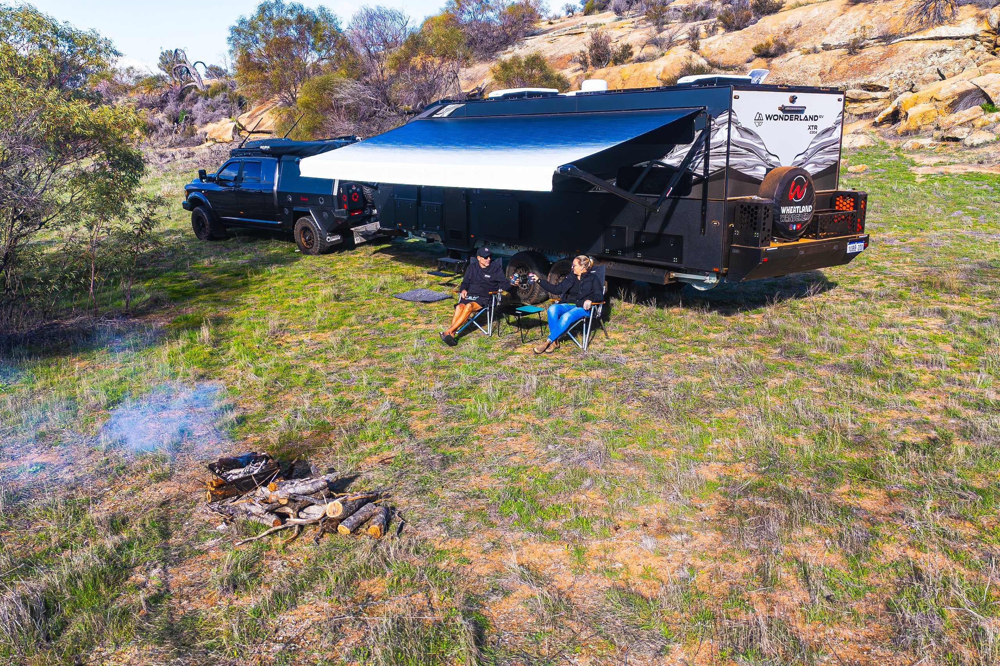
The Wheatland Wanderers are Cam, Sharyn, and their sons Jye and Cruz. They started out their journey inside of tents, pop-up caravans, and expanders.
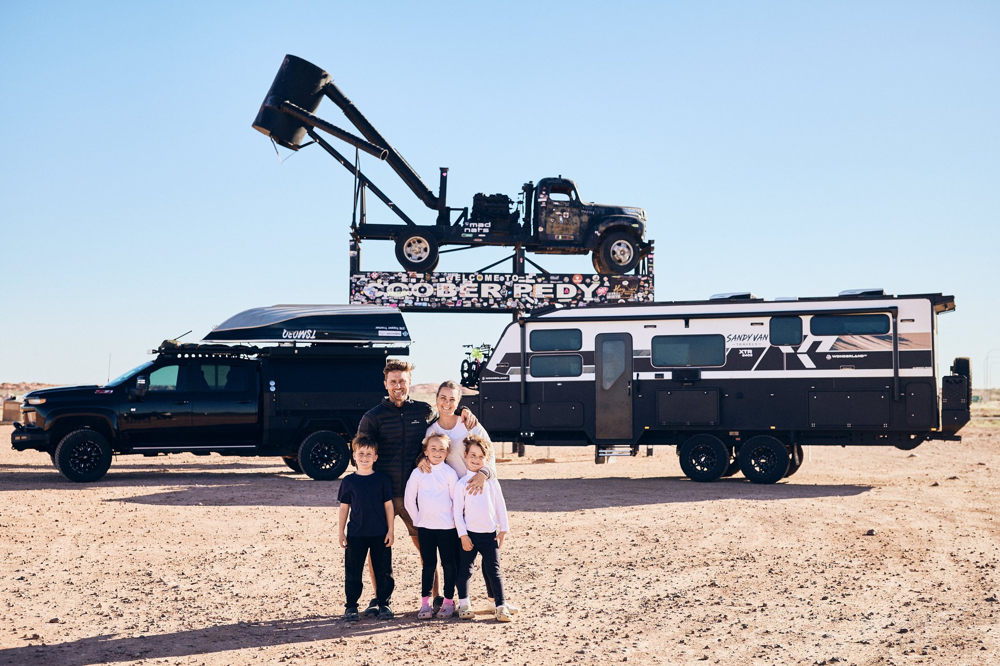
Jess, Doug and their three children have travelled Australia full-time since 2024, documenting the road through photography, video and honest storytelling.
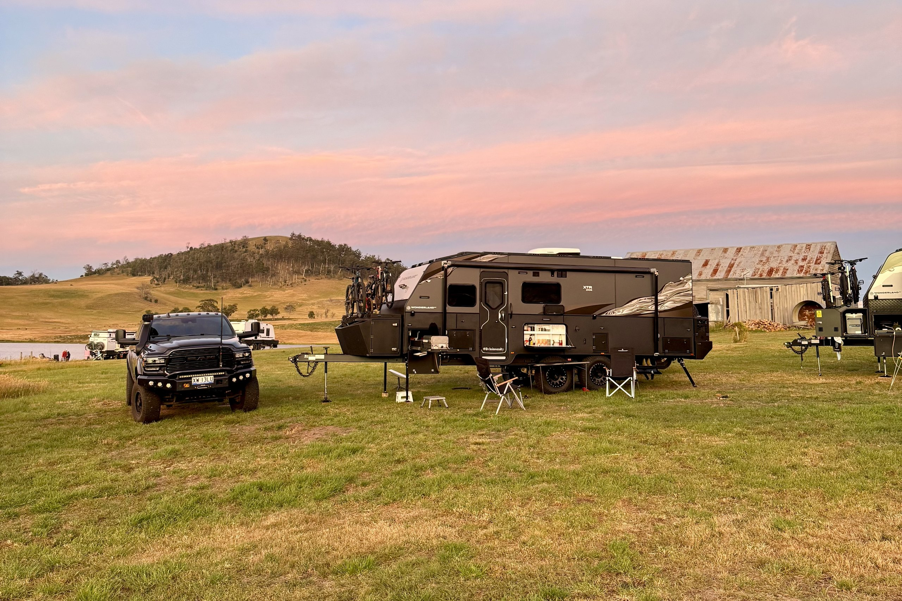
Since February 2023, this beautiful family has been full-time travelling, capturing awesome moments and sharing epic memories.

Rorden, Cass, Jed and Lexi sold their house in seven days and hit the road in their Hornet. A year was never going to be enough, so van life became the long-term plan.

Placeholder: bio and photo still to come from Adam and Jessy.
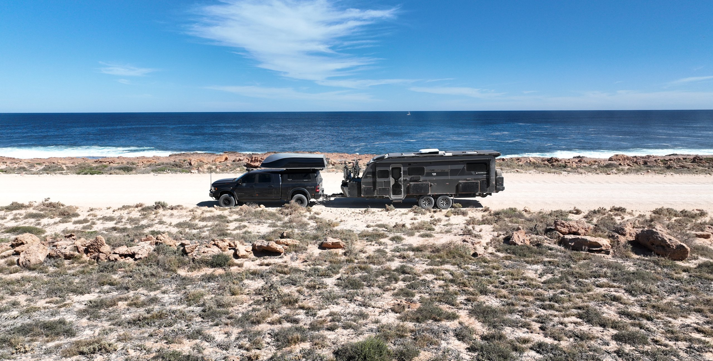
Because no two travellers are the same, we believe
no two caravans should be either.
YOUR TRAVELS, YOUR VISION,
YOUR CARAVAN JOURNEY, YOUR RULES.
The Feel Good Family are Katie, Paul and Jasper, who have travelled Australia full time since September 2019. What started as a two-year lap of Australia has become seven years on the road. They homeschool Jasper as they go and run their business, The Feel Good Family, from wherever they happen to be parked.
The Feel Good Family travel in a Wonderland RV Solara, a full composite off-road caravan. Their layout has a queen bed with a storage chest, twin bunks along the roadside and an ensuite on the doorside. Katie, Paul and Jasper say the build quality is excellent and the Solara tows beautifully. See the Solara range.
The Solara is the full composite caravan in the Wonderland RV range, built with frameless composite sandwich panel construction. The XTR, Hornet and Amaroo are built with a composite one-piece wrap-around front, roof to back, with SPR (self-piercing riveted) aluminium side walls instead. The Feel Good Family say they’ve always loved a composite van.
Yes, Wonderland RV builds caravans with bunks and an ensuite, with up to six bunk beds depending on the layout. The Feel Good Family’s Solara has both, alongside a 6’6" queen bed with a storage chest and a bedside table. Twin bunk family layouts show more ways to set one up.
You need a reliable internet connection: The Feel Good Family call Starlink an essential, because staying connected makes it easier to live, school and work on the road. For off-road and off-grid travel, they recommend investing in a quality battery and solar setup, plus quality suspension, so you can get further off the beaten track and stay there longer.